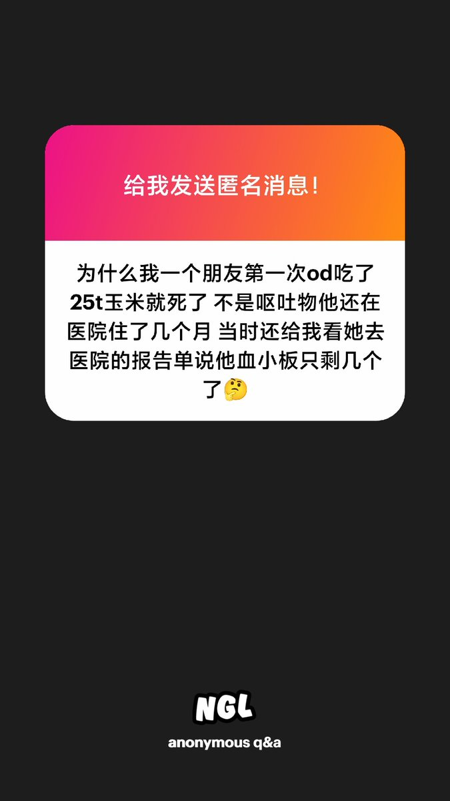

🍀🍥竹蜻蜓🍥🍀
@zqtlovekris99
@overdose_six 这是右美沙芬直接致死的吗，会不会联用了其他药了。就像那个吃3片lsd挂了的但不是lsd直接导致的

椎名#心宿二
@overdose_six
这个还真有案例 在FDA中有多例过量使用右美沙芬后出现急性血小板减少的报告 血小板减少可能与免疫机制或代谢产物毒性有关 不过这确实很罕见 第一次25t玉米确实有点高 右美沙芬过量可导致血清素蓄积 间接影响血小板聚集 也可能诱发药物依赖性抗体 攻击血小板 极高剂量可能直接抑制骨髓巨核细胞生成 https://t.co/i5dHv3nLyj